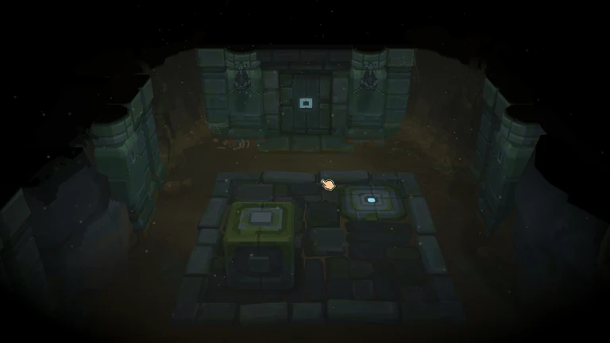
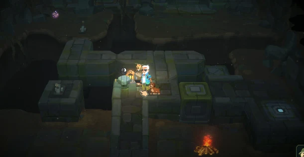
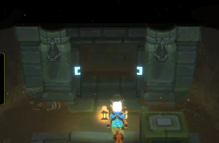
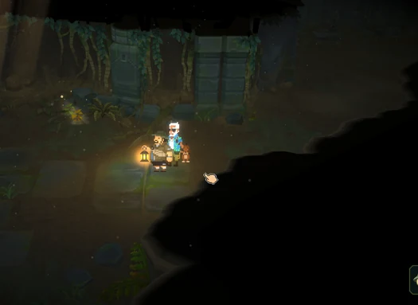

데이브 더 다이버 / 인 더 정글 DLC
TA 인턴으로 참여한 곤충 애니메이션, 지하 던전 무드 R&D와 지형 마스킹·상호작용 에셋 작업.

01 / Insect animation
곤충 배틀 애니메이션
- 과제
- 다양한 종류와 크기의 곤충을 배틀 동작에 대응시켜야 했습니다.
- 구현
- 곤충별 애니메이션을 제작하고 Unity에서 Animator와 트리거를 구성했습니다.
- 결과
- 곤충 배틀에 필요한 애니메이션과 엔진 연결 작업을 담당했습니다.
02 / Dungeon R&D
던전 무드와 지형 마스킹


- 과제
- 지하 던전의 분위기와 지형 표현을 검토해야 했습니다.
- 구현
- 무드 R&D를 진행하고 지형 마스킹 셰이더를 제작했습니다.
- 결과
- 팀의 던전 장면에 사용할 그래픽 표현을 연구·구현했습니다.
03 / Interactive assets
상호작용 오브젝트 제작


- 과제
- 던전 내 상호작용에 사용할 오브젝트가 필요했습니다.
- 구현
- 문·레버·엘리베이터·보물상자의 모델링, 임시 텍스처링과 애니메이션을 제작했습니다.
- 결과
- 게임의 상호작용에 필요한 에셋과 움직임을 제공했습니다.
CREDITS & SCOPE
기여 범위와 작업 기록
민트로켓 TA 인턴으로 참여한 업무 범위입니다. 던전 전체나 최종 아트 전체를 단독 제작한 작업은 아니며, 텍스처 작업은 임시 텍스처링 범위입니다. 게임과 관련 이미지의 권리는 해당 권리자에게 있습니다.
기록 기준: 2026.10 포트폴리오, 2·12쪽.